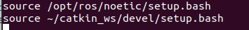

Потом со страницы Turtlebot3 simulation выполняем пункт 6.1.1:
cd ~/catkin_ws/src/
git clone -b noetic-devel https://github.com/ROBOTIS-GIT/turtlebot3_simulations.git
cd ~/catkin_ws && catkin_make
Возникала ошибка, что ros не видел нужный мне уже установленный пакет turtlebot3_gazebo и вообще все пакеты из catkin_ws/src.
Ошибку устранил после того как в файле ~/.bashrc расположил строки в правильном порядке:

Если эти строки в другом порядке расположить, тогда возникает ошибка, что ros не видит пакеты в catkin_ws/src.
export TURTLEBOT3_MODEL=burger
Запускаем в gazebo файл.launch:
roslaunch turtlebot3_gazebo turtlebot3_world.launch
Из-за того что не выполнил вначале export TURTLEBOT3_MODEL=burger возникает ошибка:

Выполнил обе команды, но теперь ошибка:

Сказали, что проблема в видеокарте. Я всё-же решил установить отдельно gazebo на ubuntu и проверить, как он будет запускаться.
Установка Gazebo
Устанавливать буду классический gazebo11 со страницы Install Gazebo using Ubuntu packages.Есть несколько способов установки Gazebo:
- Как написано, используя ubuntu пакеты на этой странице скачиваем архивы и потом распаковываем в бинарные пакеты.
- Одной командой:curl -sSL http://get.gazebosim.org | sh и потом выполнить команду gazebo
- Шаг за шагом, буду его использовать:
- Установим доступ к репозиторию packages.osrfoundation.org:
sudo sh -c 'echo "deb http://packages.osrfoundation.org/gazebo/ubuntu-stable `lsb_release -cs` main" > /etc/apt/sources.list.d/gazebo-stable.list'Можем проверить, что путь к репозиторию записан и правильно:
cat /etc/apt/sources.list.d/gazebo-stable.list
Если всё верно, то увидим:

- Установка ключей на свой компьютер:
wget https://packages.osrfoundation.org/gazebo.key -O - | sudo apt-key add -
- Установка Gazebo:
Обновим debian базу данных:sudo apt-get updateТеперь установим Gazebo 11:
sudo apt-get install gazebo11
Будет установлен пакет gazebo11 самой новой версии (11.14.0-1~focal)
Дополнительно нужно установить еще один пакет:
sudo apt-get install libgazebo11-dev
У меня был уже установлен пакет libgazebo11-dev самой новой версии (11.14.0-1~focal) - Проверяем: gazebo
У меня не открылся:

Видимо всё же проблема в видеокарте.
- Установим доступ к репозиторию packages.osrfoundation.org:
12.08.2024
Проблему запуска gazebo похоже решил в компьютере с windows7 программой mobaxterm. Она устанавливает соединение с linux-компьютером и позволяет выполнить gazebo на windows-компьютере.
В терминале mobaxterm:
export TURTLEBOT3_MODEL=burger
roslaunch turtlebot3_gazebo turtlebot3_world.launch
Далее пункт 6.3.2 Run Navigation Node (запускаем RVIZ):
export TURTLEBOT3_MODEL=burger
roslaunch turtlebot3_navigation turtlebot3_navigation.launch
Если выполнить эти пункты в терминале gnome, то получим ошибку, видимо также из-за косяка с видеокартой. Поэтому эти команды выполним в терминале mobaxterm.
Без газебо открывается, а с ним не получилось.